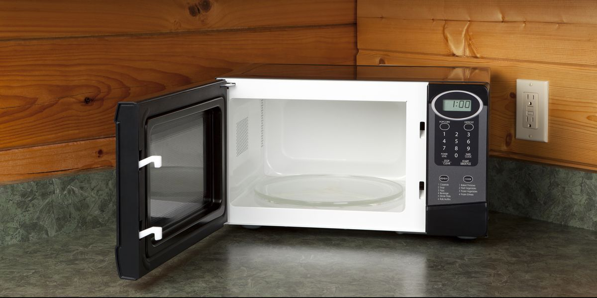

The first step to microwaving anything properly is to know that there is a super secret, super special button, called the power setting! What this button allows the microwave to do, is not blast your hot pocket with massive amounts of energy, heating up the most water dense areas of your pocket first. This will result in a more evenly cooked Hot Pocket, that will hold you over until mommy makes tendies, without burning your entire mouth!
